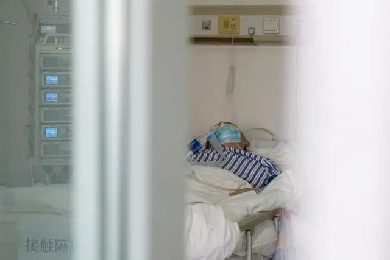

生死金银潭：一支医疗队的50天
原文链接 备份链接 图|财新记者 丁刚 过去的一个多月发生了太多的事情，但郑军华无法忘记抵达武汉时的感受：“我们下飞机时，下着小雨，冷风刺骨，整个城市都是空荡荡、黑漆漆的。大家都神情凝重，不知道将面对什么，大巴车上安静得可怕。” 1 …

海报：张玉佳
本文约7895字
预计阅读时20分钟
作者 | 中青报·中青网见习记者 李 强
编辑 | 陈卓
刚到北三楼的日子，经常被死亡的恐惧笼罩着。那种感觉江月明到现在还记得。
那是位于武汉市金银潭医院北楼三层的一个重症病区，专门收治新冠肺炎的重症及危重症病人。江月明只是其中之一。
住进北三楼之前，她感觉自己“看不到希望”。一起住进金银潭医院的病友离世了，此前一起聚会的朋友也感染了。她想，自己如果当时没住进医院，继续烧到39.5℃，走不动路，可能就死了。
她的肺部CT影像显示，双肺大片磨玻璃样渗出。大年初一，医生跟家属下了病危通知，她只模糊地记得医生在摇头。
后来，是复旦大学附属中山医院呼吸科副主任医师蒋进军把她拉回来的。蒋进军是在江月明进入金银潭医院3天后到的，和他一起到的是上海市第一批支援湖北的医疗队。
截至3月24日，这支医疗队已经接管这个病区60天。60天来，医疗队面对过数十次死亡，他们不断地降低病区死亡率，从“两眼一抹黑”地与死神抢人，到与世界分享重症与危重症病人救治经验。
“有人来救了”
江月明记得，自己被急救车拉到了金银潭医院那天是腊月廿八，庚子新年尚未来临。第二天，武汉封城，她在恐惧中度过除夕夜，迎来新春。
那是金银潭医院最困难的一段时光。医院174名医生，438名护士已陆续全部投入一线，也有来自同济、协和等医院的ICU力量支援，但人力还是不够。
他们面对的，是源源不断送来的病人。金银潭医院院长张定宇脑子里的那根弦，已经紧紧绷了近一个月。
“所有医生、护士是完全没有休息，完全没有休息！”在最近接受中青报·中青网记者采访时，张定宇回忆，“所有人都是24小时连轴转，包括护士下夜班可能就给她睡个觉的时间。”
“不可能再撑下去了。再撑下去那根弦会断掉的。受伤的是整个医疗体系和我们的病人。”
病区里的常态是5个医生、十四五个护士，管理四五十个病人。医院里的保洁人员没了，医疗垃圾、病人丢出来的东西、病人的吃喝拉撒，都要护士负责。医院做行政工作的人白天去半污染区给病人送饭，夜里有人还要去拉从各地寄来的防护物资，“去慢了别人就拿走了”。
张定宇说，他也是在除夕夜下班回家的路上才知道，“有人来救了！”
支援武汉的第一批上海医疗队，在上海市第一人民医院副院长、上海市医学会泌尿外科专科主任委员郑军华的带领下，从长江尾飞向长江中下游的这座已经封城的“孤岛”。
1月25日的深夜1:30左右，飞机在雨中降落在武汉。郑军华在起飞之前，才拿到张定宇的电话，才知道自己带领的队伍要支援金银潭医院，这个疫情的“风暴中心”。
这是一支从上海52家医院的呼吸科、感染科、急诊科、重症医学科等抽调而来的“医护精英”。除了郑军华，队伍里还有曾经抗击过“非典”的上海市第一人民医院呼吸科学科带头人周新，也有上海市瑞金医院重症医学科主任陈德昌。
起初，他们并未想象到在这家医院里正发生着什么。
有人离家时把孩子托付给闺蜜，有人穿着裙子匆忙赶来，有队员说刚走进金银潭医院时感觉这里“死一般的沉寂”，第一次在院子里遇见穿着白大褂的医生时，下意识地绕开走。对于这个病毒他们知道得不多，对病毒感染造成的严重后果始料未及。

金银潭医院北三楼一位气管插管的病人。中青报·中青网见习记者 李强摄
“情况比我们想象的要严重”
第一次进入隔离病房，领队郑军华也不敢确定，口罩以及身上的防护服，是否能够抵挡住病毒。郑军华记得，接管病房的第一天晚上，他们就遇到了一例死亡病例，“情况比我们想象的要严重”。
“两眼一抹黑”“束手无策”是这支上海医疗队多位专家、教授进入金银潭医院初期的感受。由来自52家医院的医护人员组成的医疗队，管理需要磨合；在陌生的医院面对临时改造的ICU，环境需要熟悉；更重要是这个陌生而诡异的病毒，需要一步步加深认识。
他们接管的病区包括北三楼的临时ICU病房、北二楼的普通病房。临时ICU的31张床位上，有20多个极其危重的新冠肺炎患者。“像这么多重病人集中在一起的场面，很多护士没见过。”郑军华说。
蒋进军进入病房后才知道，条件远比想象的艰苦多了。他记得北三楼306室20号床的病人老伍，刚来时“神清气爽”，看上去并不严重，但一天之后病情突然加重。“（鼻导管）吸氧半个小时不行，半个小时高流量吸氧，还不行。”蒋进军在酒店通过微信不停地“远程指挥”。
库房里20台无创呼吸机全部用上了，最后他们在库房的角落里找到一台处于死机状态、管道不全的无创呼吸机。蒋进军直接联系了呼吸机厂家的工程师，现场连线，重启了“死机”的呼吸机，又把呼吸机需要的管道拼凑齐全。上了呼吸机，才将老伍抢救回来。
郑军华感到压力很大，一面担心队员感染，一面为重症病人救治而焦虑，睡不着是常有的事。有着丰富重症病人抢救经验的陈德昌，血压前所未有地高到不得不吃药。抗击过“非典”的周新也发现，“以往的经验有时候行不通了。”
让陈德昌印象很深的是，一个还不到40岁的男人。“上了无创呼吸机，本来病情比较稳定，平时还可以聊天。”后来有一天，他前去交接班时，在楼下见到了男人的妻子在哭泣，那时才知道，昨天晚上男人“突然一下血压下来了，人就没了”。
“怎么挺好的病人一下子就走了。”陈德昌很奇怪，他们竭尽全力地抢救，有时仍然拦不住死神抢走病人。虽然许多死亡病例都是老人，但他们并非都有严重的基础性疾病，还有癌症晚期的老人未死于癌症却死于新冠肺炎。
医生们开始思考，到底问题出在哪里？
病毒的靶器官在哪儿，救治方案应该如何优化，低血氧症如何改善，“炎症风暴”真的存在吗，为什么血压会突然降低，病人的肺部到底成了什么样子？医生们对这个疾病的疑惑太多了。
“我们必须寻找答案。我们不能这样悲观下去，我们一定要前行。”郑军华2月初的那段时间里，脑子里总琢磨着“病理解剖”的事儿，“病理解剖是了解疾病发展规律，特别是致病性非常重要的一块儿”。陈德昌也意识到，“要打开一些谜团，必须做尸检才知道体内发生了什么。”
“寻找答案”
世界上第一例、第二例用于解剖的新冠肺炎逝者遗体，均出自上海医疗队接管的金银潭医院北三楼重症病房。
“这个事情达成，不是那么简单的。”郑军华告诉记者，实际上他们一直都在尝试推动，只是在2月15日、16日，条件具备了。新冠肺炎病人的遗体解剖已获得相关部门的批准，华中科技大学同济医学院法医系教授刘良领导的遗体解剖团队已做好准备，金银潭医院愿意提供遗体解剖场所。
但想要获得病人遗体，并非易事，首先要征得家属的同意。据媒体报道，首个肺炎逝者，因家属不同意，而未能够进行尸体解剖。且后来的1500多名逝者，也均未做过尸检。
在接管病区之后，上海医疗队就规定，每天打一个电话与病人家属沟通病情。家属与医生之间的信任逐渐建立起来。当病房的医生联系2月15日、16日去世的两位病人的家属时，对方都同意进行尸体解剖。“其实现在看（每天跟家属通电话）这个规定，（对尸体解剖）起了非常重要的作用。”郑军华说。
遗体解剖确实让许多疑惑得到了解答。
比如，病毒的靶器官不只是肺，“心、脾、肾、肝、小肠等，甚至卵巢都有损伤”；比如，机械通气后血氧饱和度提不上去，是因为病人细小支气管肺泡里有大量黏液分泌，把肺泡堵住；比如，此前“炎症风暴”只是临床推测，遗体解剖后发现“（病人）体内没有这么大的炎症”；比如，以前胸腺肽只敢按说明书的一周用两次，胆大点儿一天一次，后来发现淋巴细胞都没了，一天敢用两次，“很多人淋巴细胞就上来了”，等等。
由遗体解剖而得来的“病理改变”，写进了《新型冠状病毒肺炎诊疗方案（试行第七版）》里。如此一来，面对标准化的诊疗方案，医疗队也能够更积极地判断病人发病阶段，病情细节，给不同的病人制订个体化治疗方法，“尽量不要让病人发展到呼吸衰竭”。
那时候，上海医疗队接管病房已有40天，虽然偶有医护人员感冒发烧，但没发现有人感染。医护人员与陌生环境的磨合也已经完成，救治经验慢慢积累，医疗队抢救的效率与质量，也不断提高。即便是在ICU，死亡率也在下降，郑军华也感受到，身上的压力渐渐小了。
慢慢改善的还包括一度困扰郑军华气管插管的问题。
“插进去，过几天（病人）就走掉了，这说明我们插的时机不对，说明到这个时间你再去插管，对病人的治疗效果不好，大家去反思。”郑军华告诉记者，“第六版（诊疗方案）就提倡，‘及时进行气管插管和有创机械通气’。很多都是临床经验的总结。”
上海医疗队进行的第一例气管插管，是陈德昌做的。
这位瑞金医院重症医学科主任已经20多年没亲自为病人插过管了。他不知道自己是否能够成功，那次插管时，他看着飞沫喷溅到自己戴的正压面罩上，“非常危险”。后来再次给病人气管插管时，直接“把病人自主呼吸打掉”，但这样留给他插管的时间只有一二十秒，“必须保证100%成功，不然他可能就有危险。”
蒋进军则试图将无创呼吸机用到极致。江月明转入北三楼306的第一周，蒋进军说，随时都在准备为她进行气管插管。但他明白，当时气管插管之后的病人存活率并不高。他要发挥无创呼吸机最大的效果。“病人有左肺和右肺，呼吸机要成为病人的第三个肺，让它与人体保持很好的同步性，人机合一。”
“呼吸机没调好，就容易人机对抗。”蒋进军总是花费很多心思去调整呼吸机的参数，在他看来，有时候并不需要上有创呼吸机，只是无创呼吸机没发挥出它最大的功效，“就像摄影，有人就用傻瓜模式，但其实你可以用M档（手动模式）拍出你想要的效果”。
与此同时，蒋进军将此前江月明吃的药尽可能精简，以减少药物在身体上产生的副作用，并鼓励她主动进食，增强抵抗力。
江月明咳嗽，蒋进军在治疗中加了治咳嗽的药，防止导致气胸；为了防止误吸和加强营养，蒋进军使用了鼻胃管给她供给营养；为了避免长期卧床不动造成深静脉血栓，蒋进军鼓励她努力活动腿脚，并给她用了活血化瘀的药物。
蒋进军还更换了病房里的经常漏气的吸氧面罩，换上从上海调运来的针对中国人脸型而设计的“钮式面罩”，病人戴上后舒适度非常高，才不会出现扒掉氧气面罩的情况；并采用俯卧通气的方法，让肺部能够更好地恢复。
“一定活着回来”
住进金银潭10天后，江月明活下去的意念慢慢萌生。在那之前，她只想求一个解脱。“床边上一样东西我都拿不了，一拿就马上气喘不过来。”那阵子，紧张的救治一直进行着，悲观的情绪，也需要被抢救。
306室的不少病人都有过情绪崩溃，以及拒绝治疗的经历。
江月明所在的病房，对面床的老伍，入院时还能够独立行走，但病情加重时，眼睛几近失明，躺在床上时，失明的恐惧与烦躁让他总想扒掉那个长得像猪嘴巴的吸氧面罩。郑军华记得，病区里一个病人不配合治疗，不仅扒掉了自己的吸氧面罩，还差点儿扯破了护士的防护服。
绝望之时，江月明想过自杀。她拒绝配合治疗，还问护士能不能给她一把剪刀。她要忍受着身体疼痛和心理恐惧的折磨。“仿佛失去了活着的意义”。
说话的力气都没有的时候，她用手机一点点敲下遗言，发给女儿：“要是妈妈真的回不来的时候，你自己好好生活。”女儿不让她这么说。
江月明最绝望的时候，护士拨通了她女儿的电话，希望女儿多跟妈妈视频，“哪怕说不了话，就发一个视频。”医生和护士也鼓励着江月明说：“只要配合治疗，会活着的。”有时候则哄着说，“你的病情在好转。”
有一天女儿在视频里说：“妈妈，我一定要等着你活着回来。”江月明哭了，开始想好好活下去。蒋进军让她“把饭当药吃，营养非常重要”。于是，她开始拼命吃饭，护士没时间喂饭，她就用手抓着饭菜一点点儿往嘴里送，即使那时候同病房的病人正在换尿布或者排便。
无创呼吸机用了两三周，撤掉了，换用高流量吸氧面罩，又用了两周左右，开始鼻导管吸氧。等取下氧气面罩的那天，江月明发现自己的嘴巴捂烂了，乌紫乌紫的。再后来她开始尝试着下床走路，起初她只能够做到把脚挪到床边坐着，三四天之后才真正在护士的搀扶下走起路来。
蒋进军知道，306病房里的4位病人都是“有文化的人”，有大学教授，有公务员，也有公司白领。于是她决定让已经写下遗书的江月明当这个病室的“室长”，大家“互相照顾，互相鼓励，互相监督”，比赛吃饭，鼓励运动，互相做心理建设。
23床的老刘恢复得挺好，但他本身有胰腺炎，“开始一滴水都不能喝，全部要吊盐水。”后来老刘看到其他几个人呼啦啦吃饭，有点儿着急自己的病情，便偷偷吃粥。“结果淀粉酶一下子就飚上去。”
蒋进军就告诉306室的其他人：“你们吃饭时稍微告诉他一下，不要让人家嘴馋。”江月明就开导老刘说：“老刘，你现在不能吃饭是为了将来更好地吃饭。”
“周围有人死掉，大家心理上都非常恐惧，所以他们就相互扶持，就像一家人一样。”蒋进军说，“病人给病人做思想工作，会更好。因为我们医生穿着防护服，像个太空人一样，有距离感。”

金银潭医院北三楼朝南的病房已经被清空的走廊里摆着空病床。中青报·中青网见习记者 李强摄
这段特殊的日子
60天来，郑军华带队接管的病区收治了170位新冠肺炎病人，其中重症/危重症比例高达72.35%，已经有92名病人出院。3月23日，病区里只剩下27名患者，病房空了一半。郑军华准备把两个病区合成一个病区。
院长张定宇清楚，上海医疗队接管的危重症病人的病区，治疗效果非常好。郑军华带领的团队过来以后，“整体的病死率在下降，出院病人在增加”。一些此前被认为很可能救不回来的病人，活了下来。
陈德昌印象中有一位，本身就得了肺癌的病人，“我以为他预后不好，结果越来越好了。”他记得15床有一个肺部被病毒侵蚀很严重的女病人，免疫功能一直都很差，上了无创呼吸机。“我们以为她活不过来，结果把她救活了。”
有一天陈德昌查房的时候，15床的病人突然到他跟前，给他深深鞠了一躬。原本这位女病人的丈夫也住在北三楼，10多天前治愈出院了。陈德昌记得，丈夫经常来病床前陪着她，这两口子在2月14日情人节那天，一人拿着一个苹果让医护人员帮忙拍照，以纪念他们一起度过的这段特殊的日子。
许多病人的成功救治，以及对新冠肺炎病毒的认识，都是建立在一线医生对临床救治经验不断进行总结分析的基础上。
3月13日，国际著名医学期刊《JAMA Internal Medicine》发布了一项研究成果，揭示了COVID-19致患者出现急性呼吸窘迫综合征（ARDS）和患者从ARDS发展至死亡的危险因素，并归纳分析了激素在治疗中的作用。
这正是郑军华带领的上海市第一批医疗队联合武汉市金银潭医院、复旦大学附属中山医院宋元林教授团队，对武汉市金银潭医院收治的201例新冠肺炎患者进行救治经验回顾性分析的结果。
研究发现：从住院到ARDS发生，从ARDS发生到死亡，可能存在不同的风险因素。与ARDS的发展以及从ARDS到死亡的发展相关的风险因素包括高龄、嗜中性粒细胞增多、器官凝血功能障碍。此外，他们还发现在ARDS患者中，激素甲泼尼龙的使用可能使患者获益。
目前，该研究在JAMA官网的阅读次数已突破17万余次，受到国内外同行广泛关注。研究团队收到20多封国外同行来信，希望能够进一步交流他们的抗疫救治经验，写信的人来自美国、意大利、加拿大、巴拿马等国。
该研究第一作者之一的吴超民告诉中青报·中青网记者，从国外同行的来信中，他能感受到他们对当前中国成功的抗疫救治经验是高度重视和迫切需求的，他们在邮件里的开头常常写道：“我们正处在一个抗疫的艰难时期。”其中，美国佛罗里达州梅奥诊所呼吸科主任Augustine S Lee 教授还表示，“希望探讨新冠肺炎的救治经验，并邀请我们给他们科室的医生做一个学术视频讲座。”
郑军华发现，其他国家迫切地希望了解中国的探索，尤其是在重症病人的救治、社区感染的控制等方面，还会关注当发生ARDS后呼吸机、CRRT的使用等。“他们特别想知道，我们国家在降低危重病人死亡率上的救治经验。”吴超民补充道。
“医学是在不断地进步，传染病会再来。那是病毒，你永远杀不死的。”经此一役，周新觉得有许多值得我们去反思，“它和人类是共存的，它也会出变异，我们永远跟不上它。今后还要时刻警惕这种不明原因的感染，一定要警惕。”
如今，医生们对于病死率的降低分析了多种可能性。可能是病毒毒性减弱，收治的病人危重程度下降；可能是医疗资源充足，救治效率和质量提高；也可能是他们积累了更丰富的治疗经验。他们最愿意看到的情况是，病人转去轻症病房别再转回来，或者直接康复出院。
当死亡无法逃避时，医护们也会选择尽力送逝者最后一程，因为那些人被送进医院时，可能是与家人见的最后一面。
北三楼的护士长徐璟记得，有一天，一位老人离开了，当他的遗体被送离时，护士们都默默站在走廊的一边，经过谁身旁都会说一声：“老爷爷，一路走好。” 一些家属听闻病人去世，站在医院楼下大哭也未能见到逝者最后一面。徐璟想，我们就替家属送送吧。
那些逝者的遗物，原则上不允许被家属带走。但家人总希望能够留下点什么，比如老人临终前用过的手机，会放进消毒柜里消毒，然后单独放进袋子里，双层包裹好之后，贴上逝者的姓名和床号，等待亲人来取。
恐惧慢慢散开
面对一个没有特效药的疾病，很多时候，医疗队能做的是通过药物治疗、营养支持、氧疗支持，让病人活下去，以对抗病毒。
对于几乎每天都有死讯的重症病区，情绪的安抚显得至关重要，尤其是在没有家人陪护的隔离病房，医护人员必须及时掐断病人“不想活”的念头。
上海医疗队的医护人员，则一点点儿地鼓励病人，“有好身体才能抵抗病毒”。从上海调来的50名心理医生，有时也会进入病房帮助病人克服心理上的恐惧。护士一口一口地喂饭，有时候一个病房要花上一个半小时才能喂完，再或者给行动不便的病人泡脚、洗头。病人想吃水果的时候，护士们就从住的酒店带水果过来。病人因为住院匆忙连袜子都没穿，护士们便把自己的新袜子拿了过来。
一位护士记得，有一天她推着老人下楼做CT的时候，阳光很好。已经很久没晒过太阳了的老人说：“在病房里太没劲，太无聊了。”她就说，“那我带你晒一会儿太阳吧，但时间不能太久，你氧气不够。”
护士们让病人很感动，病人也有让护士们的泪目的时候。2月29日那天，正赶上护士刘燕生日，306室的病人躺在床上录的几段小视频，让医护人员们哭得一塌糊涂。
视频里老刘取下吸氧面罩，喘着气说：“刘燕，谢谢你的细心照顾，来日武汉相会。”病房里的医疗仪器嘀嘀嘀地响着，说完他赶紧又把面罩戴上。其他人也依次摘下口罩，送上生日祝福。
在如今的306病房里，死亡的恐惧已经慢慢散开了。4个人只是偶尔再讲起各自死里逃生的经历，激动时老范的血压会升高，江月明会流泪，他们都觉得自己是最有故事的那个。
老刘还上着高流量氧疗仪，而江月明和老伍早就换下鼻导管吸氧，老范已经脱掉吸氧设备，在住院超过50天后终于达到出院条件，江月明说自己也快出院了。他们希望之后能够住进同一个隔离点，他们互加了微信，建了个微信群，准备分享养生知识。
这几个本来可能要插管甚至上ECMO的病人都用无创通气救过来了，现在能够陆陆续续地出院了，对蒋进军来说是再开心不过的事。蒋进军记得老伍出院的时候说，等来年一定到上海去看他和医疗队的医生、护士。
上海第一批支援湖北医疗队已经在这里驻扎了60天，他们看着其他医疗队的返回，心生羡慕，但仍要坚守到最后。好在他们都从那个无比难熬的冬天，走出来了。
蒋进军再回想起两个月前刚来金银潭时，这个冬天安静得可怕，尤其是那场在上海很难见到的大雪，更添压抑。而此刻在金银潭医院，很多病人已经出院了。北三楼的病房空了一半，院子里萌发出春天的气息，早樱开了又落，油菜花正开着，院子里许多树已经抽出绿芽，病房里时常有布谷鸟和灰喜鹊的叫声传进来。
（为保护受访者隐私，文中病人均为化名）
中国青年报·中国青年网出品
微信编辑 | 陈轶男

觉得好看请点这里
原文链接 备份链接 图|财新记者 丁刚 过去的一个多月发生了太多的事情，但郑军华无法忘记抵达武汉时的感受：“我们下飞机时，下着小雨，冷风刺骨，整个城市都是空荡荡、黑漆漆的。大家都神情凝重，不知道将面对什么，大巴车上安静得可怕。” 1 …
原文链接 备份链接 【财新网】（记者 萧辉）70岁的李爹爹在新冠重症隔离病房经历过生死关，他没想到，治愈回家后，还要忍受的被周围人冷落和躲避的“自我隔离”生活。 1月26日，李爹爹住进湖北医院隔离病房，一周之内和他同病房的两个病友去世。前 …
原文链接 备份链接 这是驰援武汉的复旦大学附属中山医院医疗队领队朱畴文的谈话录音，讲述了他和他的团队从抵达武汉，进驻医院到参与治疗过程的经历，在谈到武汉和武汉人时，他几度声音哽咽。关于防护物资、关于病人收治、关于疫苗、关于心理压力、关于 …
原文链接 备份链接 每天一条独家原创视频 大年初一，首批驰援湖北的医疗队之一 湖南株洲市中心医院的15人医疗队抵达黄冈。 发现状况令人崩溃： 黄冈当地医护人员天天连轴转， 已经支撑不下去， 防控不到位，医护人员陆续被感染， 床位紧张，住 …
原文链接 备份链接 澎湃新闻记者 李佳蔚 郁斐 制图 进驻武汉第一天，上海医疗队就知道，要治愈的不仅是患者身体，治愈出院也不会是服务终点。 时至今日，事实证明他们做得不赖。 2月7日，上海中山医院第四批医疗队进驻武汉大学人民医院东院，整建 …